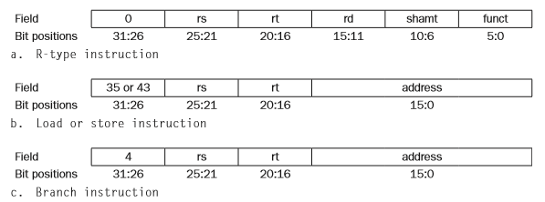

Week 1
Single Cylcle Processor
There are 3 main instuctions of the MIPS instruction set. These are:
- Memory Referencing Instructions (lw, sw)
- Arithmetic/Logic Instructions (add, OR)
- Branching Instructions (beq, j)
Program Counter
During the execution, the processor will need to keep track of what part of the code its up to with the program counter.
Instruction Memory
All the instructions need the processor to retrieve the instruction (Instruction Fetch).
Registers
All the instructions need the processor to access and read the registers. Some instructions need to write to the refisters
ALU
All the instructions (except j) will need to do some sort of arithmatic (add, sub) using the ALU. Even memory and branching instructions need to add the offset.
Data Memory
Memory Referencing instructions need to access the data memory to read/write.

Here we are going to get into the nitty gritty of each of the types of the instructions and how they are implemented in the processor.
R-Type Instructions (Arithmetic-Logic Unit)
lets look at how to code add $t1, $t2, $t3
1. We will first need to get the instruction:
- PC sends address to Instruction memory which spits out an instruction
- Instruction Memory sends the instruction onwards (add)
- The PC should increment (+4)

2. Next the Instruction must be decoded:
- The corrct registers need to be read ($t2, $t3) from register file
- The corrct registers need to be able to be written to ($t1)
- The read data from the registers are sent onwards to the ALU
3. Then the Instruction has to be executed:
- The read data is received by the ALU and added
- The ALU produces an ALU Result which is then written back to the register file
note the blue lines which represent the control signals to each of the components.
Memory Access Instructions
Lets now consider lw and sw. For example, you might run this code: lw $t1, offset_value($t2)
In this case we will need to add more to out implementation, namely the Data Memory - this is where we can access things saved in data.
1. Get Instruction
2. Set read/write registers
These we know how to do already with the PC, Instruction memory and the Register File.
3. Get the address by adding the offset.
- The offset is 16bit and needs to be changed to 32bit before being put into the ALU
- ALU to add $t2 + offset_value
4. Read the data in the address and write it to the register ($t1).
For this we will the Data Memory component to read the data from.
Branching Operations
Most of the components required for Branching are already in place. However there are some important things to note:
- PC Incrementation is sign extended and then left shifted twice such to produce a 2bit word offset.
- The ALU should produce a zero output so that the logic for BEQ can be determined by an AND gate (zero && branch-instr)
Current Implementation
Let's have a closer look at the control systems in place to handle all the different types of instructions.
ALU Control
The ALU does many types of operations - add, sub, AND, OR, NOR, slt. How does the ALU know when to do what? The ALU Control.
Prettu much, the Main Control (we will look at later) gets the instruction opcode and sends the ALUOp to the ALU Control which decodes it and sends it to the ALU which then knows what operation to perform.
For an ALU instruction, the operation is fully defined by the O and the funct.
Main Control
The rest of the control signals are handled by the main control except for the zero signal which comes from the ALU output.
Performance
Performance metrics
Performance of a processor or computer is thought about in 2 ways:
- Throughput
- Latency
Throughput is the amount of work that can be done in a given amount of time.
Latency is the time it takes to complete an action.
What is the ideal performance?
In most cases we want to:
- increase throughput
- decrease latency
NOTE: increasing throughput does not always imply decreasing latency/response time. E.g. adding additional processors to a system might increase throughput, but have the requests que up which doesn't decrease the latency.
Comparing Performance
When comparing the performance of two systems. You say A is n times faster than B where n = latency(B)/latency(A).
OR n = throughput(A)/throughput(B).
Just use your brain to remember which is what. If A is a better performer, then n should be greater than 1.
Measuring Performance